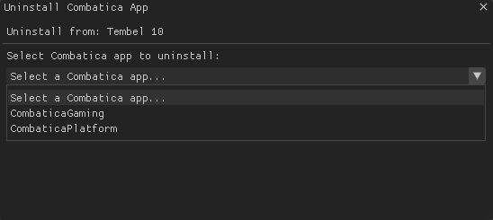

Developer Mode Features
Advanced tools for power users and debugging scenarios.
Accessing Developer Mode

Dev Tools Panel
Shell Command Execution
Run any ADB shell command directly on selected devices (Meta custom OS blocks most shell commands)
- Execute system commands
- Query device properties
- Access log files
- Debug app issues
Manual Package Management
Launch and Uninstallation control over installed applications by package name
- Launch any app by package name
- Uninstall all device apps (except Snorlax itself, ha-ha)
- List all installed packages
- Clear app data/cache
Management Features
Custom Device Names
Make device identification easier with custom names:
- View → Device Names Manager
- Enter stupid names (e.g., "Tembel 1", "Tembel 2")
- Click "Save All Changes"
- Names persist across sessions

APK File Management
Manage your APK library:
- View → APK File Manager
- Add APK files from your computer
- Remove outdated versions
- Open folder to manually manage
Browse to add into APK library:
App Uninstallation/ App Launch
APK installation, Remote and Local
Remote install (Accepts any direct http/https downloads)

Local install (Reads all apk's in apk folder)
Ping
Pings selected devices. (Plays a sound from the quest)
The quest device needs to be in 'awake' mode for this
Restart
Self explanatory.